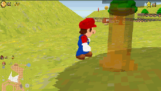
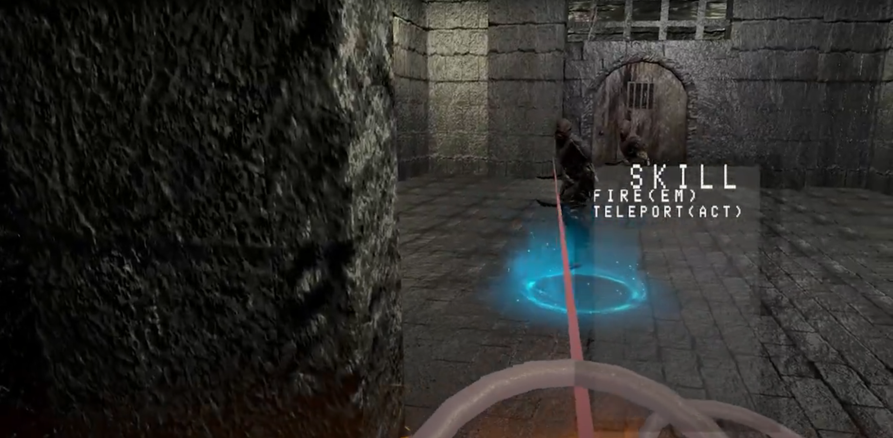

Village☾
3인 팀 · AI NPC · 개발 중
마피아 마을
NPC들이 서로 대화하고 투표하는 마을에 주민으로 참여합니다. 게임 규칙과 페르소나를 설계하고 Unity 클라이언트를 Agent Framework API에 연결했습니다.
UNITY · PROCEDURAL RPG
탐험할 때마다 방과 복도가 달라지는 던전 RPG. 맵을 청크로 나누고 길 찾기와 오브젝트 생성을 여러 프레임에 분산했습니다.

NPC들이 서로 대화하고 투표하는 마을에 주민으로 참여합니다. 게임 규칙과 페르소나를 설계하고 Unity 클라이언트를 Agent Framework API에 연결했습니다.

무기 색상을 골라 적의 셸을 깨는 웨이브 전투입니다. 무기 설명과 실제 피해 판정이 일치하는지, 보스의 공격 경로가 의도대로 열리는지 검증했습니다.



폭탄병의 전장을 재현하며 접촉 법선으로 바닥과 벽을 구분했습니다. 경사가 같아도 재질에 따라 미끄러지는 정도가 달라지도록 구현했습니다.

발사 동작에 불 속성과 반복을 붙이면 연발 주문이 되는 마법 문법을 설계했습니다. 손짓을 잘못 인식했을 때 어느 단계에서 실패했는지 보여줄 방법을 비교했습니다.

드론 영상의 탐지 좌표를 QGIS 지적 정보에 연결했습니다. 경계에 걸친 객체는 관리자가 원본과 지도에서 함께 확인하도록 구성했습니다.

교내 채점 서비스의 DB 이전과 권한별 조회를 맡았습니다. 수식·이미지가 있는 문제를 검증하고 4개 분반의 운영 피드백을 반영했습니다.